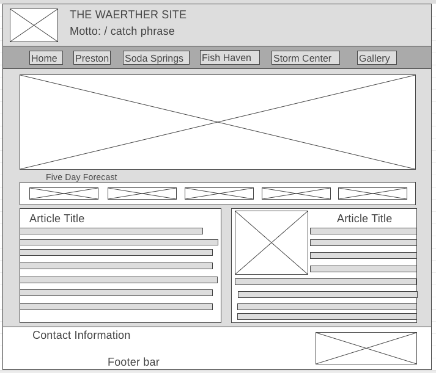

Purpose
Purpose and activities:- This website is to create a weather forecase that is educative motivates those that felt education is too hard, this platform is to help education studies to be fun and easily comprehensive. Education should be view as a passport to the future, for tomorrow belongs to those who prepare for it today. Your attitude towards it matter, not your aptitude, will determine your altitude.
Weather forecasting is the application of science and technology to predict the conditions of the atmosphere for a given place and time. People have tried to predict the weather informally for millennia and formally since the 19th century. Weather forecasts are made by collecting quantitative data on the current state of the atmosphere, land, and ocean. . Real-life scenarios big Ideas start with a small project.
